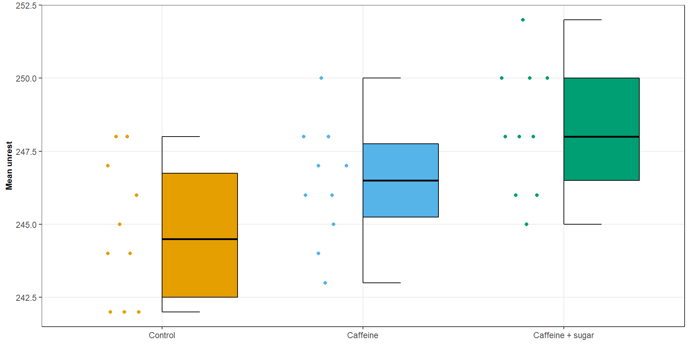
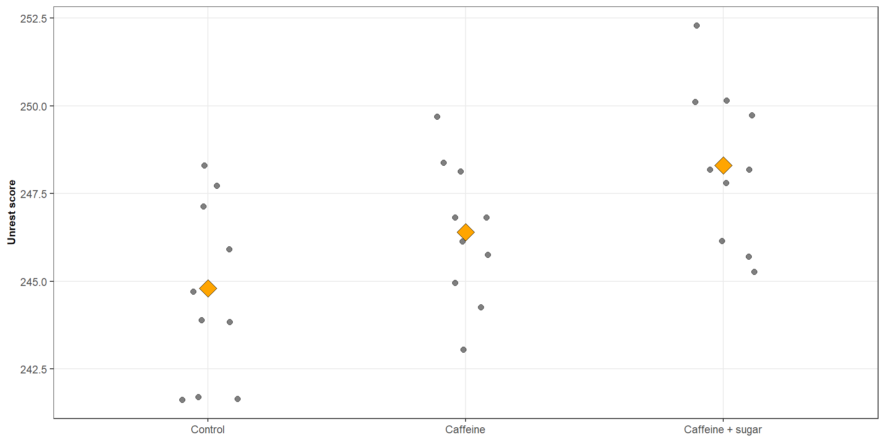
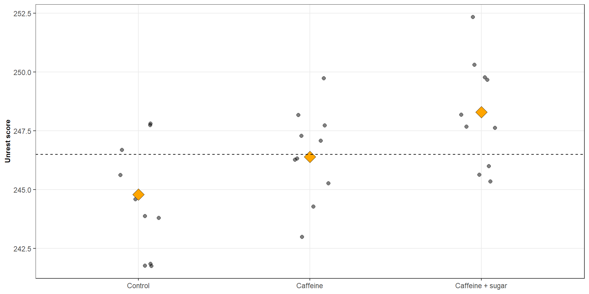

| Treatment group | Mean Unrest |
|---|---|
| Control | 244.8 |
| Caffeine | 246.4 |
| Caffeine + sugar | 248.3 |
One-way ANOVA as Multiple Regression
ST303 - Linear Models
A study was carried out to examine the effects of caffeine on unrest.
Thirty students were randomly assigned to one of three groups:
Research question
Is there evidence that mean unrest differs between the three groups?

One-way analysis of variance (ANOVA) compares the population means of two or more independent groups.
We have:
We can define:
The one-way ANOVA model can be written as:
\[ \boxed{ Y_{ij} = \mu_{ij} + \varepsilon_{ij} \quad \varepsilon \overset{iid}{\sim} \mathcal{N(0, \sigma^2)} } \]
For three groups, the model is:
\[ \begin{aligned} Y_{1j}&=\mu_1+\varepsilon_{1j}\\ Y_{2j}&=\mu_2+\varepsilon_{2j}\\ Y_{3j}&=\mu_3+\varepsilon_{3j} \end{aligned} \]
We estimate the unknown group means using ordinary least squares.
\[ \sum_{i=1}^{g} \sum_{j=1}^{n_i} (Y_{ij}-\mu_i)^2 \]
\[ \boxed{\sum_{i=1}^{g} \sum_{j=1}^{n_i} (Y_{ij}-\mu_i)^2} \]
Because each group has its own mean, we can minimise the sum of squares for each group.
\[ \begin{aligned} S_i(\mu_i) &= \sum_{j=1}^{n_i}(Y_{ij}-\mu_i)^2 \\[4pt] &= -2\sum_{j=1}^{n_i}(Y_{ij}-\mu_i) \\[4pt] \end{aligned} \]
\[ \begin{aligned} &0 = \sum_{j=1}^{n_i}(Y_{ij}-\hat{\mu}_i) \\[4pt] &\hat{\mu_i} = \sum^{n_i}_{j = 1} \frac{Y_{ij}}{n_i} = \bar{Y}_{i} \end{aligned} \]
With some rearranging we get
\[ \boxed{\hat{\mu}_i = \bar{Y}_{i}} \]
The OLS estimate of each group mean is simply the sample mean for that group.
The fitted value for an individual is the mean of the group to which they belong:
\[ \hat{Y}_{ij} = \hat{\mu}_i = \bar{Y}_{i} \]
| Treatment group | Mean Unrest |
|---|---|
| Control | 244.8 |
| Caffeine | 246.4 |
| Caffeine + sugar | 248.3 |

\[ \begin{aligned} H_0&:\mu_1=\mu_2=\cdots=\mu_g \\[4pt] H_A&:\text{not all population means are equal} \end{aligned} \]
The alternative does not require every group mean to differ. It only requires at least one difference.
We can break this difference down into two components
Between-group variation
\[ SSG=\sum_{i=1}^{g} n_i(\bar{Y}_{i}-\bar{Y})^2 \]
Within-group variation
\[ SSE= \sum_{i=1}^{g} \sum_{j=1}^{n_i} (Y_{ij}-\bar{Y}_{i})^2 \]

We can summarise all of this information in an ANOVA table
| Source | df | SS | MS | F |
|---|---|---|---|---|
| Group | g-1 | SSG | MSG = SSG/(g-1) | MSG/MSE |
| Error | n-g | SSE | MSE = SSE/(n-g) | |
| Total | n-1 | SST |
Where
Under the null hypothesis:
\[ F_{\text{obs}}\sim F_{g-1,n-g} \]
We reject the null for sufficiently large values of the F-statistic
So far, we have described the three groups using three population means:
\[ \mu_1,\qquad\mu_2,\qquad\mu_3 \]
But multiple regression allows us to represent categorical explanatory variables using dummy variables.
A dummy variable is an indicator variable taking the value:
\[ X_i= \begin{cases} 1 & \text{if the observation belongs to group }i\\ 0 & \text{otherwise}. \end{cases} \]
For three groups, we define:
\[ X_1,\qquad X_2,\qquad X_3. \]
Each observation belongs to exactly one group.
| Group | $X_1$ | $X_2$ | $X_3$ |
|---|---|---|---|
| Control | 1 | 0 | 0 |
| Caffeine | 0 | 1 | 0 |
| Ceffeine & Sugar | 0 | 0 | 1 |
For every observation:
\[ X_1 + X_2 + X_3 = 1 \]
These three dummy variables completely identify group membership.
Using the three dummy variables, we can write:
\[ Y_j=\mu_1X_{1j}+\mu_2X_{2j}+\mu_3X_{3j}+\varepsilon_j \]
\[Y_j=\mu_1+\epsilon_j\]
\[Y_j=\mu_2+\epsilon_j\]
\[Y_j=\mu_3+\epsilon_j\]
Or in matrix form
\[ \mathbf{Y}=\mathbf{X}\boldsymbol{\beta} +\boldsymbol{\epsilon} \qquad \qquad \boldsymbol{\beta}= \begin{bmatrix} \mu_1 \\ \mu_2 \\ \mu_3 \end{bmatrix} \qquad \qquad \boldsymbol{X} = \begin{bmatrix} 1&0&0\\ 1&0&0\\ \vdots&\vdots&\vdots\\ 0&1&0\\ \vdots&\vdots&\vdots\\ 0&0&1\\ \vdots&\vdots&\vdots \end{bmatrix} \]
\[ \boxed{\hat{\beta} = (\mathbf{X}^T\mathbf{X})^{-1} \mathbf{X}^T\mathbf{Y}} \]
For the means model, each observation belongs to only one group. Therefore:
\[ \mathbf{X}^T\mathbf{X} = \begin{bmatrix} n_1&0&0\\ 0&n_2&0\\ 0&0&n_3 \end{bmatrix} \qquad \mathbf{X}^T\mathbf{Y} = \begin{bmatrix} \sum_jY_{1j}\\ \sum_jY_{2j}\\ \sum_jY_{3j} \end{bmatrix} \qquad \text{where} \; \; (\mathbf{X}^T\mathbf{X})^{-1} = \begin{bmatrix} 1/n_1&0&0\\ 0&1/n_2&0\\ 0&0&1/n_3 \end{bmatrix} \]
Thus
\[ \hat{\beta} = \frac{1}{n_i} \mathbf{I}_3 \begin{bmatrix} Y_1 \\ Y_2 \\ Y_3\end{bmatrix} = \begin{bmatrix} \bar{Y}_{1}\\ \bar{Y}_{2}\\ \bar{Y}_{3} \end{bmatrix} = \begin{bmatrix} \bar{\hat{\mu}}_{1}\\ \bar{\hat{\mu}}_{2}\\ \bar{\hat{\mu}}_{3} \end{bmatrix} \]
Once we have estimated the group means, we can calculate the fitted values and residuals.
\[ \widehat{\mathbf{Y}} = \mathbf{X}\widehat{\boldsymbol{\beta}} \]
\[ \mathbf{e} = \mathbf{Y} - \widehat{\mathbf{Y}} \]
In a one-way ANOVA, the fitted value for each observation is simply the estimated mean of the group to which that observation belongs.
Let’s suppose that:
\[ \widehat{\mu}_1=244.80,\qquad \widehat{\mu}_2=246.40,\qquad \widehat{\mu}_3=248.30 \]
Hence, for an individual in the caffeine group with an unrest score of 250.00
\[ \widehat{Y} = 246.40 \]
\[ e = 250 - 246.40 = 3.60 \]
An alternative regression model is:
\[ Y_j = \mu + \alpha_1X_{1j} + \alpha_2X_{2j} + \alpha_3X_{3j} + \epsilon_j \]
This is called an effects model
However, we need to remember that
\[ X_1 + X_2 + X_3 = 1 \]
The intercept column is therefore exactly equal to the sum of the three dummy-variable columns
This means that the design matrix is not of full column rank
\[ \boldsymbol{X} = \begin{bmatrix} 1&1&0&0\\ 1&1&0&0\\ \vdots&\vdots&\vdots&\vdots\\ 1& 0&1&0\\ \vdots&\vdots&\vdots&\vdots\\ 1&0&0&1\\ \vdots&\vdots&\vdots&\vdots \end{bmatrix} \]
Why is this a problem?
If we include an intercept and all three dummy variables, there is perfect linear dependence between the columns of the design matrix.
Consequently \(\mathbf{X}^T\mathbf{X}\) is singular and cannot be inverted
There is no unique estimate of all four coefficients.
This is called perfect multicollinearity or the dummy-variable trap.
We can solve this in one of two ways
Keep the means model
\[ Y_j=\mu_1X_{1j}+\mu_2X_{2j}+\mu_3X_{3j}+\epsilon_j \]
Treat the control \(n_1\) as the reference group
\[ Y_j= \mu+ \alpha_2X_{2j} + \alpha_3X_{3j} + \epsilon_j \]
\[\boxed{Y_j= \mu+ \alpha_2X_{2j} + \alpha_3X_{3j} + \epsilon_j}\]
\[ \begin{aligned} \text{Control} &\qquad \mu \\[4pt] \text{Caffeine} &\qquad \mu - \alpha_2 \\[4pt] \text{Caffeine + Sugar} &\qquad \mu - \alpha_3 \end{aligned} \]
\[ \begin{aligned} \mu&=\mu_1\\ \alpha_2&=\mu_2-\mu_1\\ \alpha_3&=\mu_3-\mu_1 \end{aligned} \]
Sometimes we are interested in comparisons involving more than two group means.
For example, suppose we want to compare the mean unrest score in the control group with the average of the caffeine and caffeine + sugar groups.
\[ L = \mu_1 - \frac{1}{2}\mu_2 - \frac{1}{2}\mu_3 \]
More generally, a linear contrast is a linear combination of population group means with a set of contrast coefficients: \(\mathbf{c} = (c_1, c_2, \dots, c_k)^\top\), where \(\sum^k_{i=1} c_k = 0\)
\[ L = c_1\mu_1+c_2\mu_2+\cdots+c_k\mu_k, \]
In our example, these coefficients are
\[ \mathbf{c} = (1, \; -\frac{1}{2}, \; -\frac{1}{2})^\top \]
We can estimate a linear contrast by replacing the population means with their least-squares estimates.
For our contrast
\[ \begin{aligned} L &= \widehat{\mu}_1 - \frac{1}{2}\widehat{\mu}_2 - \frac{1}{2}\widehat{\mu}_3 \\[4pt] &= 244.80 - \frac{1}{2}(246.40) - \frac{1}{2} 248.30 \\[4pt] &= 244.80 - 247.35 \\[4pt] &= -2.55 \end{aligned} \]
Interpretation
The estimated mean unrest score in the control group is approximately 2.55 lower than the equally weighted average of the caffeine and caffeine + sugar group
Recall that the variance–covariance matrix of the least-squares estimates is:
\[ \operatorname{Var}(\widehat{\boldsymbol{\beta}}) = \sigma^2(\mathbf{X}^{\mathsf T}\mathbf{X})^{-1} \]
A linear contrast can be written in matrix notation as:
\[ \widehat{L} = \mathbf{c}^{\mathsf T} \; \widehat{\boldsymbol{\beta}} \]
Its estimated variance is therefore:
\[ \widehat{\operatorname{Var}}(\widehat{L}) = \widehat{\sigma}^2 \; \mathbf{c}^{\mathsf T} \; (\mathbf{X}^{\mathsf T}\mathbf{X})^{-1} \mathbf{c} \]
Taking the square root gives the standard error:
\[ \boxed{ SE(\widehat{L})= \sqrt{ \widehat{\sigma}^2 \; \mathbf{c}^{\mathsf T} \; (\mathbf{X}^{\mathsf T}\mathbf{X})^{-1} \mathbf{c} } } \]
This allows us to quantify the uncertainty associated with our estimated contrast.
For our linear contrast we can say that
\[ \sigma^2 = 4.968 \qquad \text{and} \qquad (\mathbf{X}^{\mathsf T}\mathbf{X})^{-1} = \begin{bmatrix} 1/10 & 0 & 0 \\ 0 & 1/10 & 0 \\ 0 & 0 & 1/10 \end{bmatrix} = \frac{1}{10}\mathbf{I}_3 \]
and
\[ \mathbf{c}^{\mathsf T} \; (\mathbf{X}^{\mathsf T}\mathbf{X})^{-1} \mathbf{c} = \frac{1}{10} (1^2 - \frac{1}{2}^2 - \frac{1}{2}^2) = 0.15 \]
Hence
\[ SE(\widehat{L})= \sqrt{4.968 * 0.15} = 0.863 \]
We can use a linear contrast to test whether a particular comparison of population means differs from zero.
\[ \begin{aligned} H_0: \mu_1 - \frac12\mu_2 - \frac12\mu_3 = 0 \\[4pt] H_1: \mu_1 - \frac12\mu_2 - \frac12\mu_3 \ne 0 \end{aligned} \]
We can use the following test statistic:
\[ t=\frac{\widehat{L}-0}{SE(\widehat{L})}, \]
which under the null hypothesis is assumed to follow a \(t\)-distribution with degrees of freedom \(N - g\)
# Fit an effects model
fit_1 <- lm(y ~ x, data = coffee)
# What is the output
summary(fit_1)
##
## Call:
## lm(formula = y ~ x, data = coffee)
##
## Residuals:
## Min 1Q Median 3Q Max
## -3.400 -2.075 -0.300 1.675 3.700
##
## Coefficients:
## Estimate Std. Error t value Pr(>|t|)
## (Intercept) 244.8000 0.7047 347.359 < 2e-16 ***
## xCaffeine 1.6000 0.9967 1.605 0.12005
## xCaffeine + sugar 3.5000 0.9967 3.512 0.00158 **
## ---
## Signif. codes: 0 '***' 0.001 '**' 0.01 '*' 0.05 '.' 0.1 ' ' 1
##
## Residual standard error: 2.229 on 27 degrees of freedom
## Multiple R-squared: 0.3141, Adjusted R-squared: 0.2633
## F-statistic: 6.181 on 2 and 27 DF, p-value: 0.006163
# What does the design matrix look like
model.matrix(fit_1) |> head()
## (Intercept) xCaffeine xCaffeine + sugar
## 1 1 0 0
## 2 1 0 0
## 3 1 0 0
## 4 1 0 0
## 5 1 0 0
## 6 1 0 0# Fit an means model
fit_2 <- lm(y ~ x - 1, data = coffee)
# What is the output
summary(fit_2)
##
## Call:
## lm(formula = y ~ x - 1, data = coffee)
##
## Residuals:
## Min 1Q Median 3Q Max
## -3.400 -2.075 -0.300 1.675 3.700
##
## Coefficients:
## Estimate Std. Error t value Pr(>|t|)
## xControl 244.8000 0.7047 347.4 <2e-16 ***
## xCaffeine 246.4000 0.7047 349.6 <2e-16 ***
## xCaffeine + sugar 248.3000 0.7047 352.3 <2e-16 ***
## ---
## Signif. codes: 0 '***' 0.001 '**' 0.01 '*' 0.05 '.' 0.1 ' ' 1
##
## Residual standard error: 2.229 on 27 degrees of freedom
## Multiple R-squared: 0.9999, Adjusted R-squared: 0.9999
## F-statistic: 1.223e+05 on 3 and 27 DF, p-value: < 2.2e-16
# What does the design matrix look like
model.matrix(fit_2) |> head()
## xControl xCaffeine xCaffeine + sugar
## 1 1 0 0
## 2 1 0 0
## 3 1 0 0
## 4 1 0 0
## 5 1 0 0
## 6 1 0 0